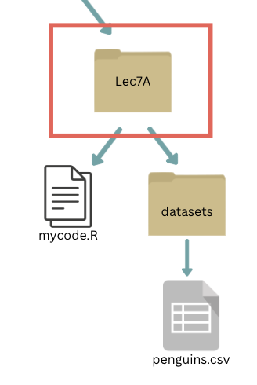

read_csv(): tidyverse equivalent of read.csv() used to import data from a CSV to a tibble
write_csv(): tidyverse equivalent of write.csv() used to export a tibble into CSV format
Let’s assume that a file called penguins.csv is saved in the same folder as our code. We can read in, and save the tibble as a variable called penguins using:
penguins <-read_csv("penguins.csv")head(penguins)
Note that the file path needs to be a string, relative to where you are now in the directory (i.e., where the R script you’re working on is saved.
read_csv and write_csv
We can also manipulate the data, and save the output as a new CSV. For example,
penguins_2007 <- penguins %>%filter(year ==2007) #filter only on year 2007write_csv(penguins_2007, "penguins_2007.csv") #save new data as penguins_2007.csv
Note
Want to read and write to an Excel file? The readxl package in the tidyverse is for you!
For the very niche option of R binary: read_rds() and write_rds().
File Locations and Paths
In the previous example, we saved and read in data that was stored in the same folder. However, we will often want to read from or write to other locations, including sub-folders in our project.
To do so, we need to specify where we are reading/writing our data from/to.
Absolute Paths
Absolute paths start with “/” (or “\” for Windows users) and begin at the root of your computer. This is a looooong set of “directions” that tell you where the file is located.
I could always read in my penguins dataset using an absolute file path where the file path begins at the root of your computer. Consider the following file structure:
What is the absolute file path to penguins.csv?
Relative Paths
The best practice is to use a relative path. This helps with reproducibility and automation!
Instead of starting at the root of your computer, you can give directions to the file you want to load in relative to the working directory (i.e., where you are now).

(If you’re having trouble visualizing the working directory, you could consider the folders nested this way as well:)
If our working directory is Lec7A, what is the absolute file path to penguins.csv?
Relative Paths
Some useful tips for relative paths:
they do not start with a slash
. represents the current directory
.. means go to one folder before the current directory (open the parent folder)
i.e., to go to the thesis folder if my current working directory is Lec7a, the path is ..\..\thesis (leave the Lec7a folder to go to the STAT545 folder, then leave the STAT545 folder to go to documents, then go to the thesis).
you can call getwd() in R to confirm where your working directory is (it will show the absolute file path as the output)
in R projects, by default your working directory is you R project folder.
Relative Paths vs Absolute Paths- which to use?
The here Package
As we stated before, things can get frustrating when sharing files between operating systems. Even with relative paths, we’ll need to manually replace forward and back slashed when switching to/from Mac and Windows operating systems.
Thankfully, there is a package that allows us to use relative paths without specifying a filepath string that is operating system dependent. Let’s (install, if necessary, and) load the here package
# install.packages("here")library(here)
The here Package
Now, let’s call here():
here::here()
Side note: we will explicitly call here() from the here package using here::here() as dplyr also has a here() function.
I get a long chain of folders where this R Project (which I used to build this website) is stored. The cool thing about here is that I can specify a file path relative to my project root (the above location) without using any operating system-specific strings.
The here Package
Example: the penguins.csv data set is located in webpages > lectures_i > datasets within my R project folder. I can access it by:
penguins <-read_csv(here("webpages", "lectures_i", "datasets", "penguins.csv")) head(penguins) #view first few entries of the tibble
This is reproducible!
The here Package
Some final notes on here::here():
By default in an R project, here::here() will be the project folder.
I don’t think you can go outside of your root folder for the R project, unless you re-initialize the root somehow using here::iam().
This does not change the working directory. However, we recommend against using setwd() and similar functions to play around with directories in R projects. This again affects reproducibility.
Joining Tibbles
Sometimes you’ll need to read in multiple data sets and then combine them. When we do this, we refer to it as “joining”.
Note: In order to join two tibbles, you need to have an identifier variable that has unique values for every row of observations in both tibbles.
Create two sample tibbles:
Mutating joins
Join matching rows from df2 to df1
Mutating joins
Join matching rows from df1 to df2
Mutating joins
Retain only rows present in both sets
Mutating joins
Retain all values, all rows
Filtering joins
Retain all rows in df1 that have a match in df2
Filtering joins
Retain all rows in df1 that do not have a match in df2
Binding
Append df2 to df1 as new rows
Binding
Append df2 to df1 as new columns
Joining multiple (>2) tibbles
Create a third tibble
Use piping operator (%>%) to layer multiple join functions
Joining tibbles on multiple conditions
Create two new tibbles df4 and df5
Joining tibbles on multiple conditions
Set operations
Create sample tibbles
Set operations
Include rows that appear in both tibbles
Set operations
Include rows that appear in either or both tibbles
Set operations
Include rows that appear in one tibble/dataset but not another
Include rows that appear in df6 but not in df7
Include rows that appear in df7 but not in df6
Next Class: Worksheet A5/MDA Session
This is the last lecture of STAT545A! Goodbye to those not continuing onto STAT545B!